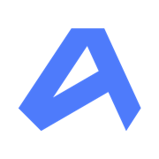

Craft per iPad
Le versioni web ufficiali delle app Craft, pronte da usare nel browser. Tocca un'app per aprirla, poi il pulsante ⌂ in basso a destra per tornare qui.
PhotoCraft
versione 0.23.1
Fotoritocco con livelli, maschere, testo e file PSD veri.
PdfCraft
versione 0.21.1
Leggi, organizza e proteggi i PDF, con riconoscimento del testo.
WordCraft
versione 0.18.1
Scrittura e impaginazione di documenti.
FilmCraft
versione 0.20.1
Montaggio video, colore e audio.
Da sapere
- Le app sono pensate per mouse e tastiera: col touch funzionano, ma con una Magic Keyboard o un trackpad vanno molto meglio.
- Il primo avvio scarica l'app e può richiedere qualche secondo, poi il browser la tiene in cache.
- Puoi aprire i tuoi file dai menu delle app, ma questa pagina blocca i download: esportare o salvare un file sull'iPad potrebbe non funzionare. Prova prima di usarle per un lavoro importante.
- Sono build sperimentali: se un'app si blocca, ricarica la pagina.